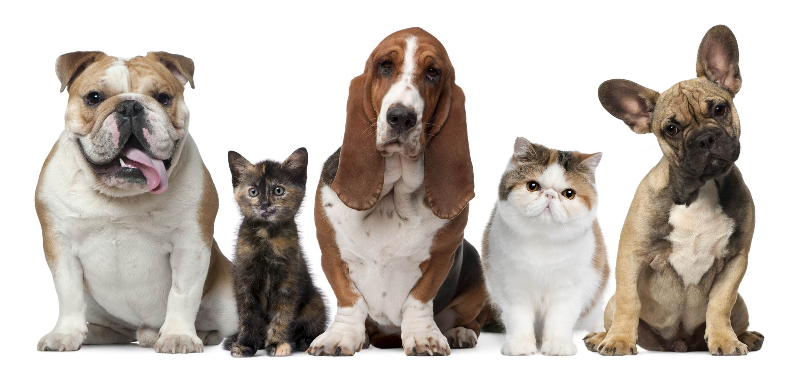

OUR PETS ARE LOOKING FOR SOMEONE LIKE YOU!

Due to tough economic times, fewer people can afford to keep their pets. So the number of homeless animals in and around Springfield is increasing dramatically.
Pets to Go is a nonprofit, no-kill animal shelter serving the Springfield area. Our mission is to give these homeless animals a second chance through our rescue, shelter, and adoption programs.
We were founded in 2009 with a few simple goals: save and place cats and dogs in new homes, and educate the public about spaying and neutering their pets.
We’re now one of the largest no-kill shelters in the state! Each year, Pets To Go helps more than 1,300 cats and dogs/year find permanent homes.
VOLUNTEERS

We can always use a hand! You can help by caring for our homeless cats and dogs, keeping the shelter clean, helping us raise funds, or fostering pets. Find out about becoming a Pets to Go volunteer.
AVAILABLE ANIMALS
We currently have 3 animals available for adoption! Come and find the perfect furry friend for your family!
View The Gallery
to check out the available animals!